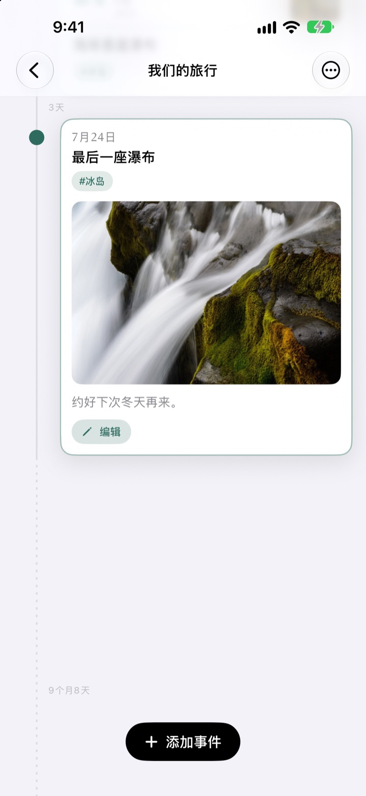
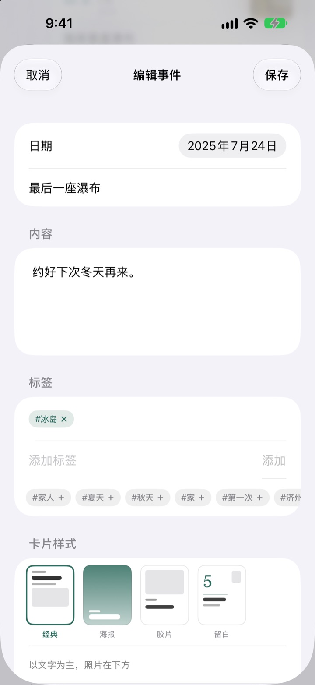

时间过了多久，
间隔就有多长
3天和5天按3比5拉开，像2年4个月这样的长空白会折成一段虚线。只看间隔，就能看出那段日子是怎么过的。
所有功能免费，支持 iPhone 和 iPad。
亲手拉开间隔试试
点一下按钮，就会在最后一个事件之后添加新事件。间隔的画法和 App 完全相同。
翻遍相册，也看不出时间有多长
照片图库只会按日期排队，隔3天和隔2年都只是挨着的一格。Yeoul 按事件之间流逝的时间拉开距离，哪段日子密密麻麻、哪段空空荡荡，一眼就能看出来。
间隔，就是流逝的时间
整条时间线用同一个比例，同样长的时间在屏幕上任何位置都是同样的长度。每段间隔都标着真实时长，比如 3天、5个月21天。
挨得太近的事件会留出最小间距以免重叠，太长的空白则折成虚线。
自动找出当天拍的照片
定好事件日期后点 查找相关照片，就会从图库里找出那天拍的照片。没有合适的，点 手动选择 自己挑。
在时间线上点一下事件，照片和文字就在原地展开。

一个标签，聚起散落的瞬间
给事件加上 #冰岛 这样的标签，点一下，散落在各条时间线里的同标签事件就会聚成一条新时间线。
保存后它会留在列表里，以后加了同一标签的事件也会自动加入。
每个事件，配一张合适的卡片
以文字为主的经典，照片铺满的海报，像相纸一样的胶片，大号日期撑场的留白。选中的那一刻，预览就跟着变。

三步开始
- 1
建一条时间线
孩子的第一年、恋爱、旅行，每个主题定好名字和颜色。
- 2
添加事件
写下日期和标题，配上当天的照片。
- 3
加上标签
同一标签的事件会跨越时间线聚到一起。
四种卡片设计
- 经典
- 以文字为主，照片放在下方。
- 海报
- 照片铺满整张卡片，大标题压在上面。没有照片时用时间线的颜色填满。
- 胶片
- 像相纸一样留边的照片，配打字机字体和日期戳。
- 留白
- 大号日期数字站在中央，照片小小的，文字才是主角。
新事件会沿用这条时间线里最新一张卡片的设计。
所有功能都免费
免费
- 想建几条时间线都行，可选名字和颜色
- 每个事件都能加照片、文字和标签
- 查找当天拍的照片
- 保存标签时间线
- 四种卡片设计
- 通过 iCloud 在 iPhone 和 iPad 间同步
- 用快捷指令和 Siri 记录
支持开发者
- 小、中、大三种打赏任选
- 不会解锁任何功能，只是表达谢意的地方
在设置页面里，想打赏的时候再打赏。
没有广告，也没有订阅。
常见问题
为什么事件之间的间隔都不一样？
Yeoul 按真实流逝的时间拉开间隔。所有间隔用同一个比例，所以3天和5天看起来就是3比5。挨得太近的事件会留出最小间距以免重叠，太长的空白会折成虚线，并标上像2年4个月这样的真实时长。
看不到当天拍的照片。
按日期找照片需要照片访问权限。请在 设置 > Yeoul > 照片 中允许访问。Yeoul 会按设备时区查找当天0点到24点之间拍的照片。如果不想授权，可以点下面的 手动选择，直接从图库里挑。
标签时间线是什么？
点一下事件上的标签，Yeoul 会从所有时间线中找出带这个标签的事件，汇成一条时间线。常看的标签可以保存在列表里。事件并没有被复制，只是聚在一起显示，所以修改原事件会同步反映，删除标签时间线也不会删掉事件。
为什么标签时间线里不能添加事件？
标签时间线不是存放事件的地方，而是按标签聚合的视图，没法确定新事件该归入哪条时间线。在原来的时间线里添加事件并加上标签，它就会自动出现在这里。
不打开 App 也能记录吗？
可以。在快捷指令 App 或 Siri 里使用 记录事件，只需选好时间线和标题。不设日期的话，就按当前时间记录。
在其他设备上也能看到吗？
用同一个 Apple 账户登录 iCloud 的 iPhone 和 iPad 会自动同步。请在 设置 > 你的名字 > iCloud 里确认 iCloud 已打开。根据网络情况，同步可能会稍有延迟。
想删除记录怎么办？
在列表里把时间线向左滑，或点编辑按钮即可删除。删除时间线时，里面的事件会一起删除。留在 iCloud 中的数据，可以在设置的 iCloud 储存空间管理里删除。
我的记录会发送给开发者吗？
不会。记录和照片只保存在你的设备和你自己的 iCloud 中，开发者看不到。详情请看下方的隐私政策。
想反馈问题或提建议？
可以直接在 App 的设置页面发送，也可以发邮件或通过 Instagram（@lee25_ios）联系。附上设备型号、iOS 版本和当时的情况，能帮我们更快解决。
有问题或建议，欢迎写信到 leeo@kakao.com。